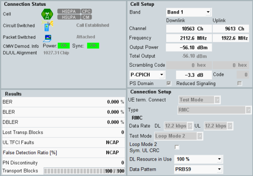

The tab shows the connection status and measurement results to the left and settings to the right.
Additional settings of the WCDMA signaling application can be accessed via the "Signaling Parameter" softkey and the related hotkeys.
To switch to the signaling application, press the "WCDMA UE-Signaling" softkey two times.
The "Config" hotkey opens either the configuration dialog of the measurement or the configuration dialog of the signaling application, depending on which softkey is active.

The connection status information is the same as in the main view. For a description, see "Connection Status".
Also, the "DL/UL Alignment" per carrier is displayed. It indicates the offset between DL DPCH and UL DPCH at the RF connectors of the instrument. The ideal offset as specified by 3GPP equals 1024 chips. The DL/UL alignment is a general measurement result, available independent of an initiated BER measurement.
Remote command:These settings are common settings of the "WCDMA signaling" application. Changing the values in one view changes the values in all views of the "WCDMA signaling" application.
For parameter descriptions, see "Signaling View".
For a detailed description, of the results see "Measurement Results".
Remote command: